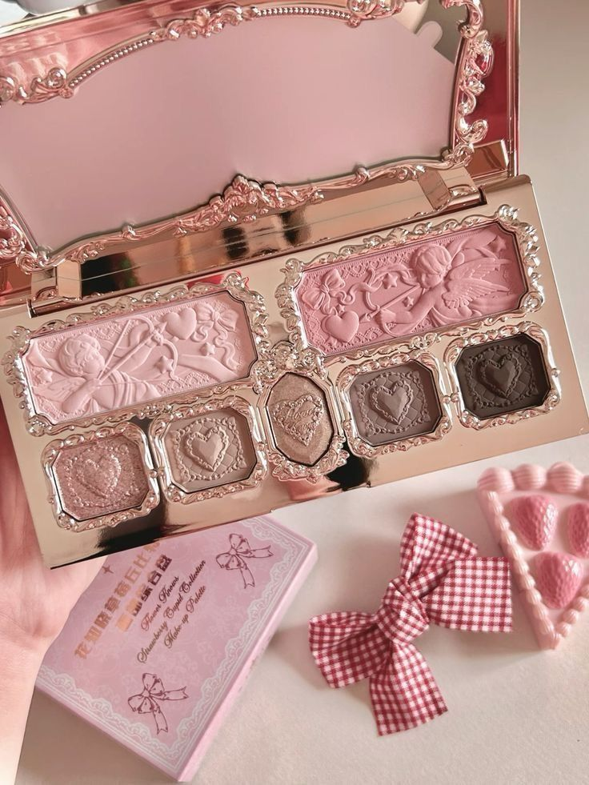
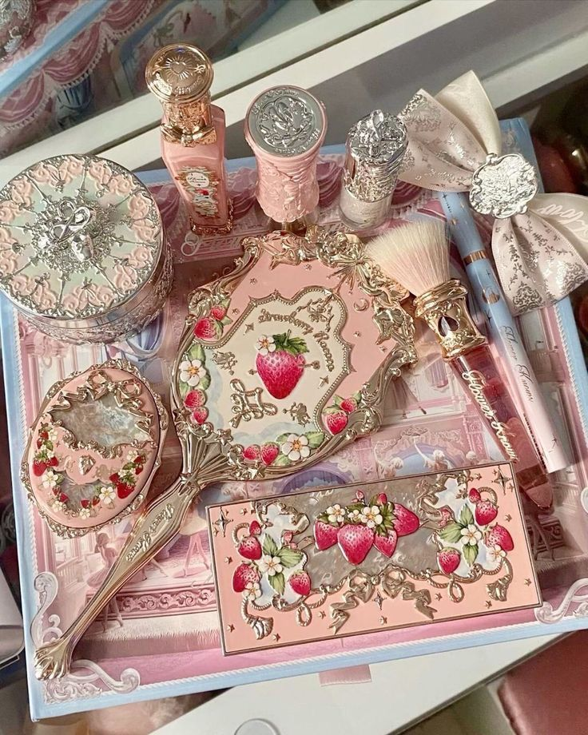
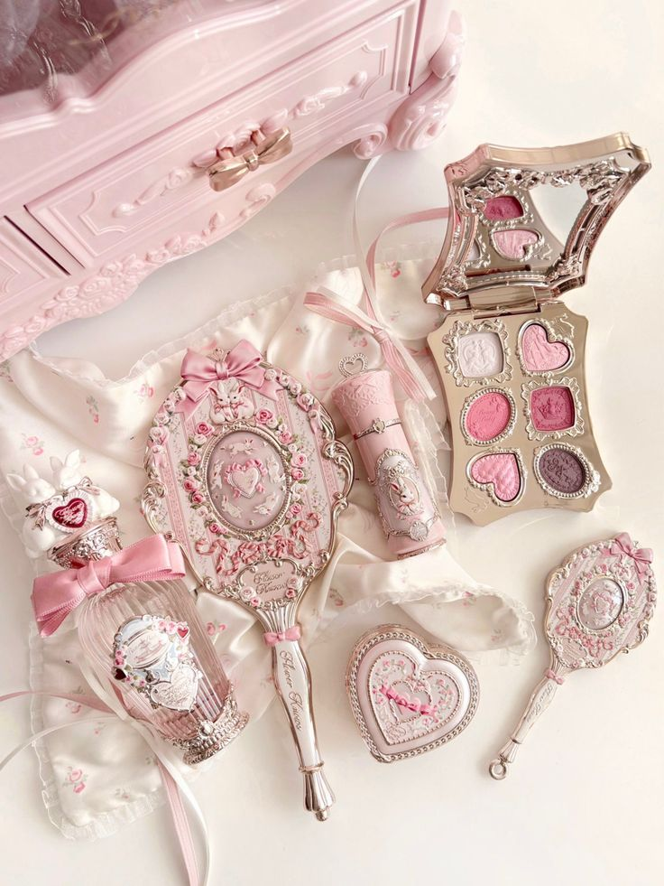

KLMXmakeup
KLMXmakeup
KLMXmakeup
KLMXmakeup
En KLMX creemos que el maquillaje es una forma de expresar tu personalidad, tu creatividad y tu confianza. Cada producto está inspirado en personas auténticas, estilos únicos y la belleza de ser tú misma.


KLMX nació de la idea de crear una marca de maquillaje moderna, elegante y accesible. Nos inspiramos en las nuevas tendencias, los colores rosados, la creatividad y la seguridad que cada persona transmite cuando se siente bien consigo misma.



Creamos estilos únicos para cada persona.
Queremos que te sientas segura, fuerte y hermosa.
Nos inspiran las nuevas tendencias de maquillaje.
Nació la idea de crear KLMX.
Se diseñaron los primeros productos y la imagen de la marca.
Se lanzó la tienda online y la página oficial.